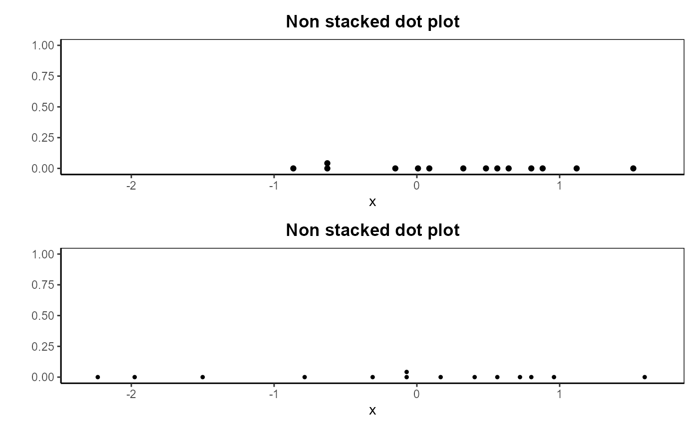
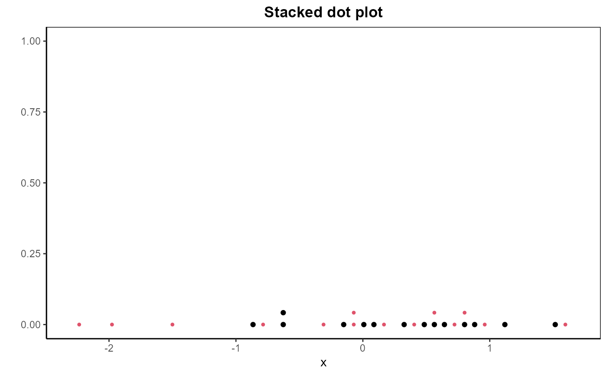

dotPlot.RdCreates a dot plot. For data in groups, the dot plot can be displayed stacked or in separate regions.
dotPlot(
x,
group,
xlim,
ylim,
col,
xlab,
ylab,
pch,
cex,
breaks,
stacked = TRUE,
main,
showPlot = TRUE
)A numeric vector containing the values to be plotted.
(Optional) A vector for grouping the values. This determines the grouping of the data points in the dot plot.
A numeric vector of length 2 specifying the limits of the x-axis (lower and upper limits).
A numeric vector of length 2 specifying the limits of the y-axis (lower and upper limits).
A vector containing numeric values or strings specifying the colors for the different groups in the dot plot.
A title for the x-axis.
A title for the y-axis.
A vector of integers specifying the symbols or a single character to be used for plotting points for the different groups in the dot plot.
The amount by which points and symbols should be magnified relative to the default.
A numeric vector specifying the breakpoints for binning the values in x.
A logical value indicating whether the groups should be plotted in a stacked dot plot (default is TRUE).
A title for the plot.
A logical value indicating whether to display the plot. Default is TRUE.
A list cointaining:
An invisible matrix containing NAs and numeric values representing values in a bin. The number of bins is given by the number of columns of the matrix.
The graphic.
Values in x are assigned to the bins defined by breaks. The binning is performed using hist.
# Create some data and grouping
set.seed(1)
x <- rnorm(28)
g <- rep(1:2, 14)
# Dot plot with groups and no stacking
dotPlot(x, group = g, stacked = FALSE, pch = c(19, 20), main = "Non stacked dot plot")

# Dot plot with groups and stacking
dotPlot(x, group = g, stacked = TRUE, pch = c(19, 20), main = "Stacked dot plot")
